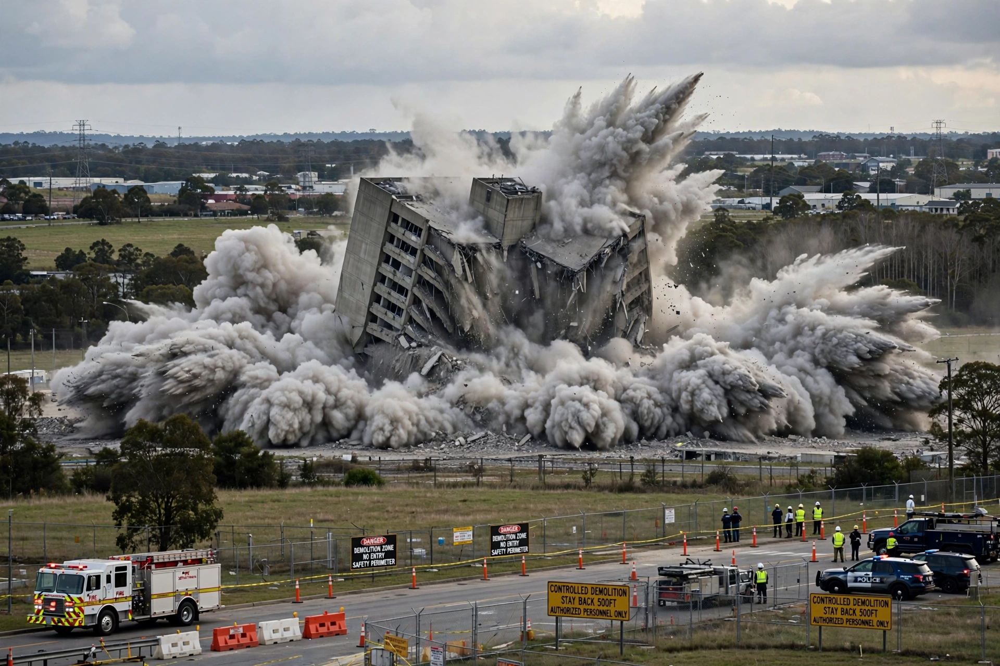

| Classes | High explosives (detonate); low explosives (deflagrate) |
|---|---|
| Examples | TNT, RDX, dynamite, ANFO, gunpowder |
| Measures | Detonation velocity, brisance, TNT equivalence |
| Uses | Mining, demolition, munitions, propulsion, fireworks |
An explosive (or explosive material) is a reactive substance that contains a great amount of potential energy that can produce an explosion if released suddenly, usually accompanied by the production of light, heat, sound, and pressure. An explosive charge is a measured quantity of explosive material, which may be composed of a single ingredient or a mixture.
The potential energy stored in an explosive material may be chemical energy (as in nitroglycerin), pressurized gas, or nuclear energy. Explosive materials are categorised by the speed at which they expand: materials that detonate — expand faster than the speed of sound — are high explosives, while those that deflagrate (burn rapidly, subsonically) are low explosives.
Gunpowder, a mixture of saltpetre (potassium nitrate), charcoal and sulfur, was developed in China by the 9th century and spread to Europe by the 13th. The 19th century brought far more powerful compounds: nitroglycerin (1847), stabilised by Alfred Nobel as dynamite (1867); picric acid; and TNT (first prepared 1863, widely used from the early 1900s). The 20th century added RDX, HMX, PETN and the ubiquitous ammonium-nitrate fuel oil mixture (ANFO) used in mining.
Most explosive consumption is civilian: quarrying, mining, tunnelling and demolition. Military uses range from shells and bombs to shaped charges and missile warheads. Related applications include rocket propellants, airbags (gas generators), pyrotechnics and safety devices such as explosive bolts. Because of their destructive potential, explosives are tightly regulated in manufacture, transport and storage, and tagged or marked in many jurisdictions to aid detection.
See also: Nitric oxide · Glycerol · Dynamite · Gunpowder